2014-12-25
Before starting to read this: Phil has written an updated version of this guide, using FLTK 1.3.4 and Visual Studio 2017. You should probably head over there.
Download FLTK from [here][ftlk]: get fltk-1.3.3-source.tar.gz and decompress it, using for example 7-Zip. You should end up with a directory fltk-1.3.3; I have put mine in a subfolder of my Documents folder:
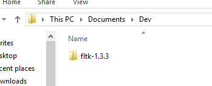
Now open the project file fltk.sln in fltk-1.3.3/ide/VisualC2010. If asked, say you’re okay with updating the project files.
Make sure you have selected Debug as your solution configuration.
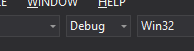
In the context menu of the demo project, select Set as StartUp Project.
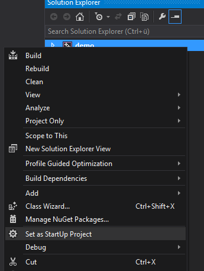
Now build the solution (Build – Build Solution or Ctrl + Shift + B). If successful, you should be able to run the demo project (Debug – Start Debugging or F5).
Change the solution configuration to Release and build again. Check if you can run the demo project (F5).
Now we have to copy the generated library files to the right directory so Visual Studio finds them. In my installation, the libraries and headers are in C:\Program Files (x86)\Microsoft Visual Studio 12.0\VC (just VC from now on). If you have the right directory, there should be a bunch of subdirectories:
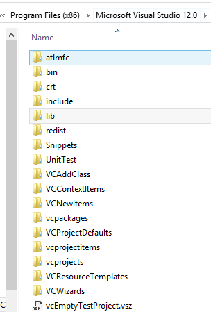
Now copy (don’t move) the following from you fltk-1.3.3 folder:
The complete FL directory to VC\include
All .lib files from fltk-1.3.3\lib (except README.lib) to VC\lib. There should be 14 files: seven pairs of two files each, one of which has an added “d” (for “debug”) at the end of the file name.
fluid.exe and fluidd.exe from fltk-1.3.3\fluid to VC\bin
To set up a FLTK project, select File – New – Project and choose Win32 Project:
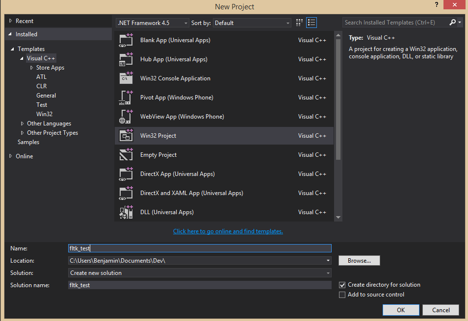
In the wizard under Application Settings, check Empty project:
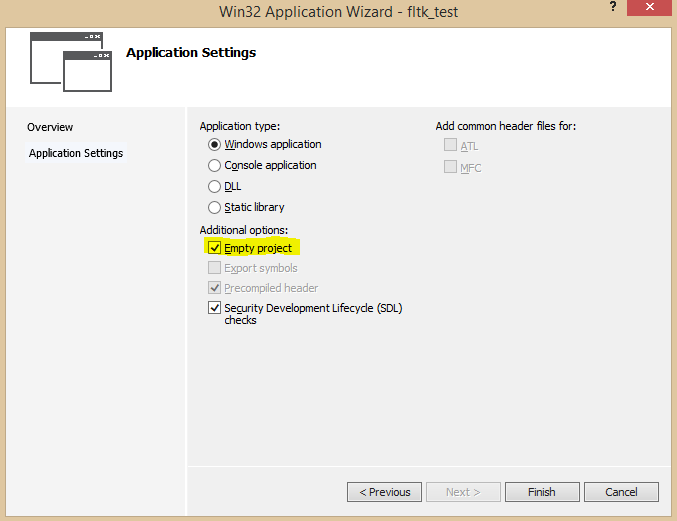
Create a source file with Project – Add New Item:
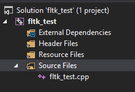
Enter this code:
#include<FL/Fl.H>
#include<FL/Fl_Box.H>
#include<FL/Fl_Window.H>
int main()
{
Fl_Window window(200,200,"Window title");
Fl_Box box(0,0,200,200,"Hey, I mean, Hello, World!");
window.show();
return Fl::run();
}Now open Project – Properties and make sure you have selected Debug in Configuration in the top left corner. Under Linker – Input, edit Additional Dependencies and add fltkd.lib, wsock32.lib, comctl32.lib, fltkjpegd.lib and fltkimagesd.lib, each on their own line:
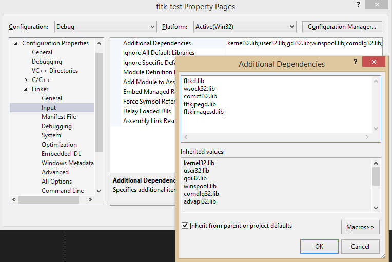
Because this is the Debug configuration, we would like to have a visible console window. To get that, go to Linker – System and set /SUBSYSTEM:CONSOLE for SubSystem:
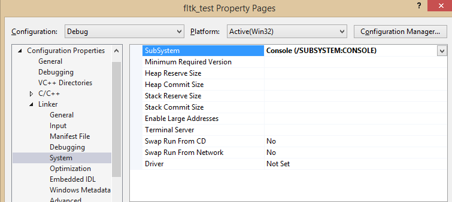
Now build and run the project. You should get a console window and the GUI window:
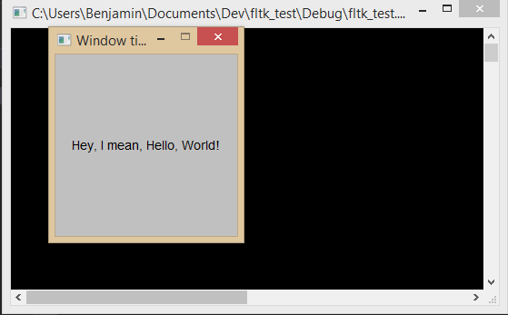
Now go back to Project – Properties and select Release as the configuration. Go to Linker – Input and edit the Additional Dependencies just like before, but this time, add fltk.lib, wsock32.lib, comctl32.lib, fltkjpeg.lib and fltkimages.lib – notice the missing d at the end of the names:
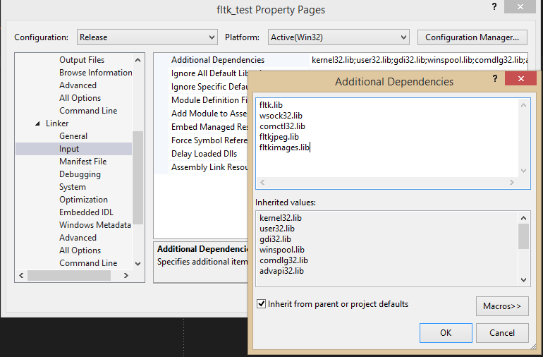
Make sure that under Linker – System, the option /SUBSYSTEM:WINDOWS is selected so we don’t get a console window. Now build and run to see if only the GUI window shows up.
That’s how you set up any project using FLTK!
A lot of people struggling with FLTK are using it in the first place because they’re working through Bjarne Stroustrup’s book “Programming – Principles and Practice Using C++”, which uses FLTK in its Chapters 12 to 16 for GUI examples. Stroustrup provides a small interface library to be used in all the exercises. Here is how to set up a project using this interface library!
Create a new Win32 project. I’ve called mine stroustrup_ppp:
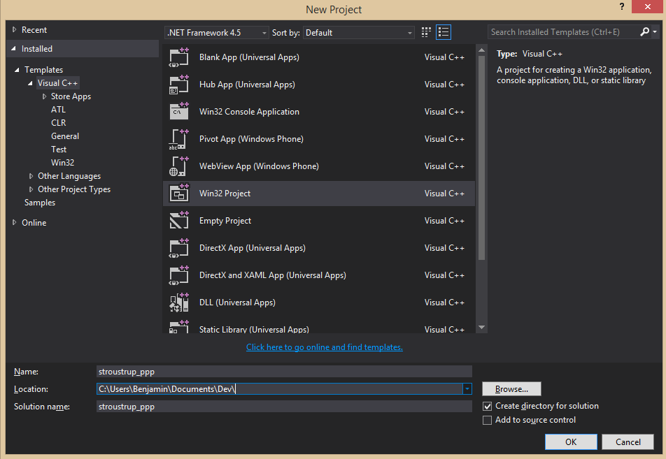
Make sure it’s empty by selecting Empty project in Application Settings in the Application Wizard.
Now set all the project properties just like above so Visual Studio properly links to the FLTK library files.
For the example, we’re going to do the drill of Chapter 12. Select Project – Add New Item to add a new file:
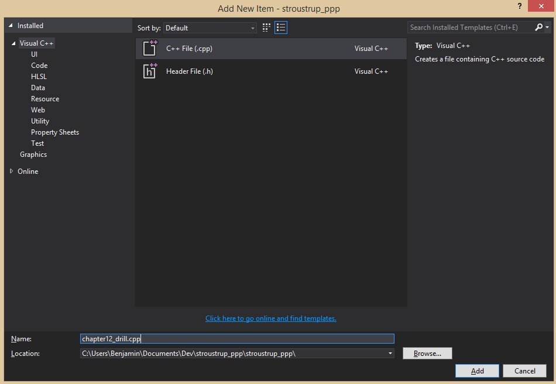
If you haven’t already, download the standard library access header and the GUI support code from the website and put them in the same directory as chapter12_drill.cpp. Ignore all the matrix files and Gui.h – download GUI.h. Don’t download simple_window.cpp as everything is already defined in simple_window.h. The directory should look like this afterwards:
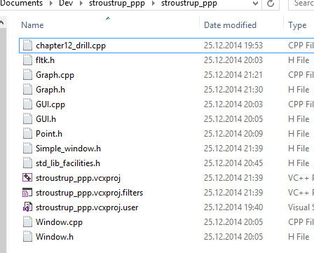
Now add all the files to the project using Project – Add Existing Item:
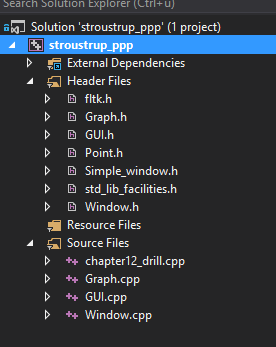
This is actually overkill as we’re not going to use GUI.h and GUI.cpp for a while, but you won’t have to add anything else when you eventually use them.
For some reason, in Point.h, the constructors are commented out. Uncomment everything in the struct.
Now edit chapter12_drill.cpp and enter this code:
#include "Graph.h"
#include "Simple_window.h"
int main()
{
using namespace Graph_lib;
Point tl(150,150);
Simple_window win(tl,600,400,"My window");
win.wait_for_button();
}If you try to build your solution now, you get a slew of errors. Here is how to get rid of them:
In std_lib_facilities.h, comment out the complete vector part:
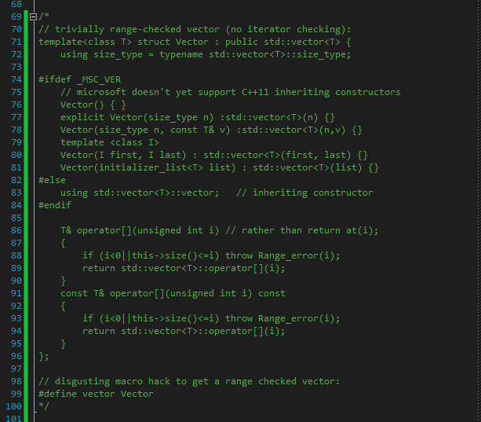
This should get rid of errors related to vector and initializer lists; you lose range checking, though.
Next, because list initialization inside member initializer list or non-static data member initializer is not implemented in VS 2013, comment out the constructor of Lines in graph.h (line 238). For the same reason, replace the constructor of Text:
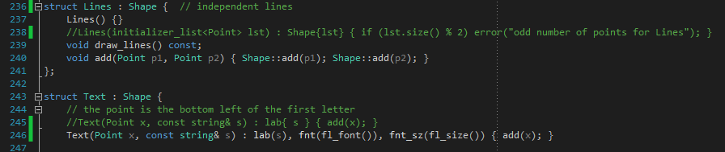
Next, in GUI.cpp, add Graph_lib:: in front of Window& in the definition of Button::attach (line 8), In_box::attach (line 30) and Out_box::attach (line 49). In Graph.cpp, in the definition of can_open, replace return ff; with return bool(ff); (line 319).
Finally, in GUI.cpp, remove the constructor Menu::Menu as it is already defined in GUI.h.
Now you should be able to build and run the project!
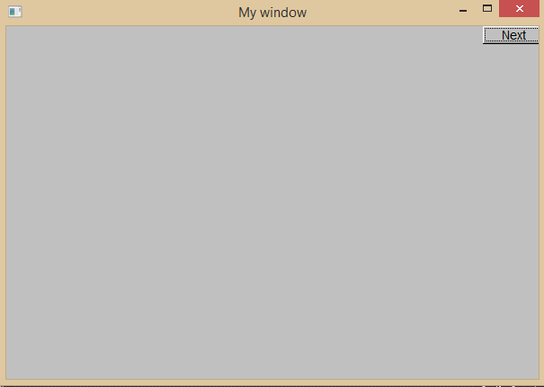